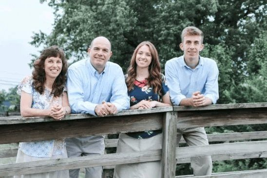
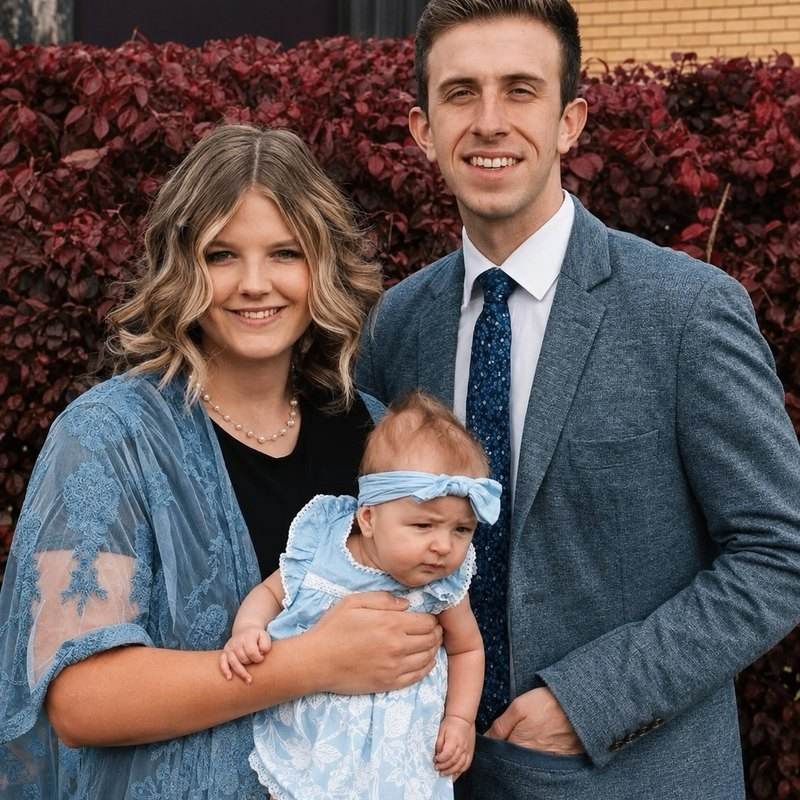
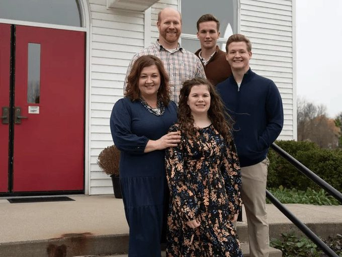
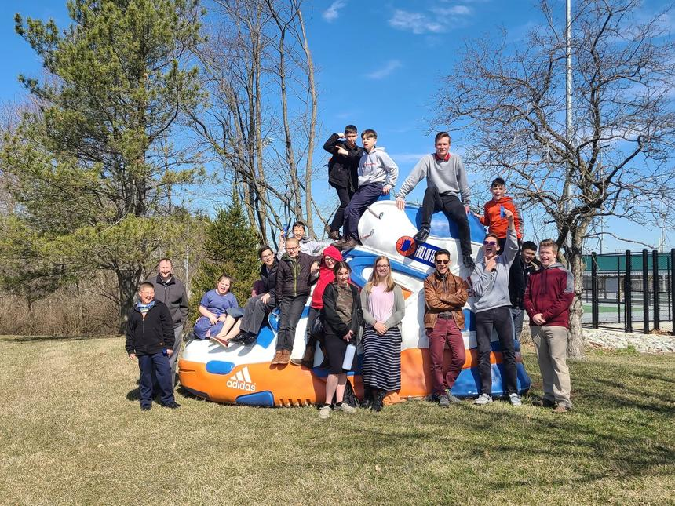
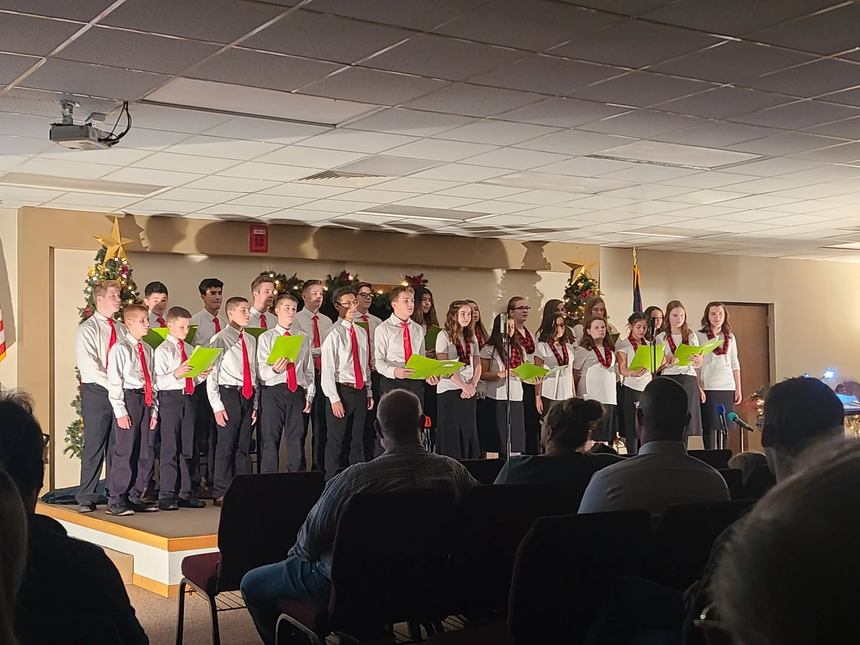
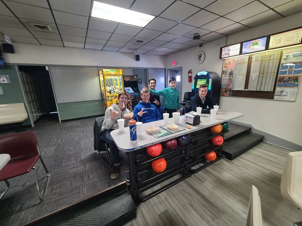
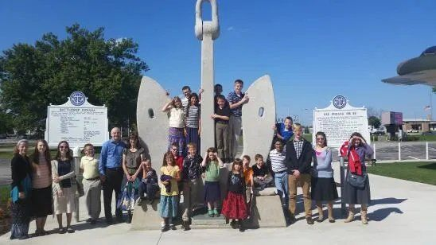

Meet Pastor Mike Tarr

Senior Pastor since 2008
Mike and Julie both graduated in the early 1990s from Hyles-Anderson College and have been married since June of 1993. Together they have two children, Carolann and Jason.
Since 1995 they have served fulltime in church ministry, and Pastor Tarr has led Roanoke Baptist as senior pastor since 2008. His heart is to preach the Word faithfully and to shepherd this church family toward the Saviour.

Jason & Lauren Tarr
Assistant Pastor
Both graduated from Hyles-Anderson College and recently welcomed their daughter, Annika.

Jonathan & Emily Lakie
Youth Pastor & Assistant School Principal
Hyles-Anderson graduates (2004). After 15 years as youth pastor in Louisiana, God moved them to Roanoke Baptist.
James & Hannah Bradley
Bus Ministry Director & School Teacher
James holds two degrees from Lonestar Baptist College. Hannah is a 2022 graduate of Baptist College of America.
Joanna Woodward
Church Clerk & Administrative Assistant
A mom of two sons who grew up here at Roanoke Baptist. She graduated from Providence Baptist College in Elgin, Illinois.
Life At Roanoke Baptist



